Consultando…
Necesito un par de comprobaciones para dibujar la tendencia.
Cada avioncito apunta hacia el rumbo real que lleva. Toca uno para ver el vuelo, la matrícula y la altitud. Se actualiza junto con "Comprobar ahora".
La idea: los millonarios y ejecutivos con jet privado a veces se enteran de las cosas antes que nosotros. Si de repente despegan muchísimos más jets privados de lo normal en EE.UU., puede ser señal de que está pasando algo delicado o peligroso (crisis, guerra, catástrofe…) antes de que salga en las noticias.
Quién hace el trabajo duro: el sistema EWS de Kyle McDonald vigila esos jets 24/7 con datos públicos de vuelo y calcula un nivel de emergencia del 1 al 5.
¿Qué significa "promedio regular"? Es cuántos jets suele haber en el aire a esta misma hora un día normal (el sistema aprende el patrón: entre semana hay más, de madrugada menos, en festivos cambia…). La alarma no salta por haber muchos aviones, sino por haber muchos más que el promedio regular: eso es lo raro.
Verificación cruzada (el "detector de mentiras"): para no fiarnos de una sola voz, la app también pregunta a dos redes independientes de radioaficionados (adsb.lol y airplanes.live) cuántos jets privados de los modelos más comunes ven volando sobre EE.UU. Con los primeros chequeos aprende sola cuánto es "lo normal" en cada red. Si algún día EWS grita nivel 5, comprueba al instante si esas redes también ven el cielo lleno de jets: si lo confirman, la cosa va en serio; si ven un día normal, te avisa de que probablemente es un falso positivo.
Qué hace esta app: cada 30 minutos lee el canal público de alertas de ese sistema. Ese canal solo "grita" cuando se alcanza el nivel 5 (emergencia oficial). Si eso pasa, te avisa con sirena, notificación y pantalla de alarma. El resto del tiempo verás nivel 1: sin señales de emergencia.
"Activar notificaciones": un solo botón, un solo toque. Te pide permiso una vez y activa avisos de verdad (como los de WhatsApp): un servidor propio, vigilado cada 5 minutos por un robot gratuito de GitHub, revisa el estado aunque no tengas nada abierto y le pide a tu celular que muestre la notificación igual, incluso con Ragnarok completamente cerrada. Actívalo una sola vez y queda funcionando solo.
Mapa mundial, categorías y tendencia: usando esos mismos datos de adsb.lol y airplanes.live, la app también dibuja un mapa mundial con la posición real de jets privados (en ámbar) y aviones militares (en azul), cada uno apuntando hacia su rumbo real; una lista de cuántos hay de cada categoría; y una mini-gráfica de cómo ha ido cambiando esa cantidad en las últimas horas. Toca un avioncito en el mapa para ver el vuelo, la matrícula y la altitud. Ojo: esto es solo para curiosear el tráfico aéreo del momento — la alarma de emergencia sigue basándose solo en los jets privados sobre EE.UU., como siempre.
Experimento curioso, no protección civil oficial. Para emergencias reales, haz caso a las autoridades. ews.kylemcdonald.net · código fuente